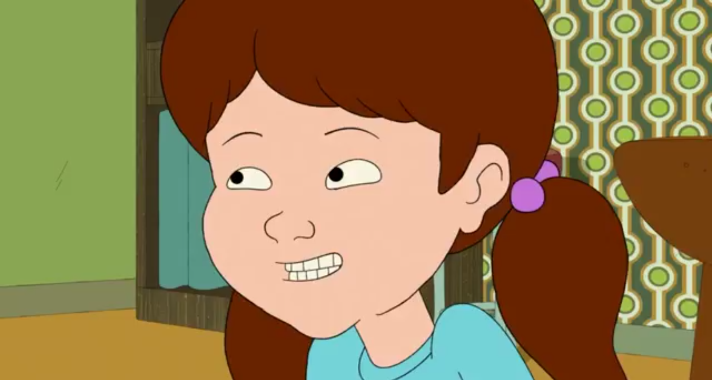

| Franck Murphy | C’est le patriarche de la famille Murphy. D'origine irlandaise, il est responsable de la bagagerie pour la compagnie aérienne "Mohican Airways". Frank a un caractère explosif et déversé sa colère sur ses proches. Il a des rapports conflictuels avec son père d’où le fait qu’il a des séquelles au niveau familial ou social. | |
 |
Suzanne Murphy | Elle est l'épouse de Frank et la mère de Kevin, Bill et Maureen. Mère au foyer, elle décidera de travailler pour "Plast-a-Ware". |
 |
Kevin Murphy | Il est l'ainé des trois enfants de la famille Murphy. Fainéant et drogué, il conteste l'autorité de son père. Enfant perdu, il est à la fois tête à claque et touchant. |
 |
Bill Murphy | est le deuxième fils de la famille Murphy. Timide, fragile et malchanceux, ce jeune garçon est constamment angoissé mais à de profonds désirs de révolte. |
|  | Maureen Murphy | Elle est la cadette de la famille Murphy. Espiègle et sournoise, Maureen se révèle être un vrai garçon manqué. Elle est l’image même du féminisme alors que ce terme n’est jamais citée dans la série. |